来源：https://fhfh1eo8ab.feishu.cn/docx/EXX2dbdepoNuYyxN0qLcyKGAnRe
大家好，我是智昊。
最近刚参加深海圈，完成了两个作业以后就一直拖拖拉拉，每天都有干不完的活，今天中午闲下来了。于是想来写一篇自己在深海圈上站过程中的一些心得。
我在参加深海圈的过程中发现群里很多圈友在使用cursor开发的时候针对报错总是通过复制粘贴或者截图的方式实现，效率很低，而且有很多报错的时候也很难完整复制清楚。刚好我最近刚优化完我的工作流，而星球还没有此类的文章，于是我决定冲一个精华。
与此同时，6月航海也开始了，我是MCP航海的教练，也应该为后续的高手分享做一些铺垫。接下来，我就给大家分享一下我从点子到可用的网站的完整口喷开发过程，权当抛砖引玉。
我们初期上的MVP网站一般只有前端的交互页面，简单的API调用，通常不涉及用户登录、计费或者后端存储等功能（当然是因为我还没学到那一块），所以我们今天的流程主要就围绕以下类型的网站展开——
“能即开即用的，最多仅使用API调用服务，解决某一特定简单问题的的MVP网站”。
比如文生图网站，比如计划分解网站，比如哄老婆网站，比如帮我吵架网站，都属于这个部分。
我先找一下我现在的痛点，比如我有很多事需要干但是非常杂乱，而且很多todo都没有经过拆解，也没有记录，我希望能有一个ai帮我拆解我的待办并列好优先级。
首先，我打开gemini，新建一个用户需求洞察专家的gem。
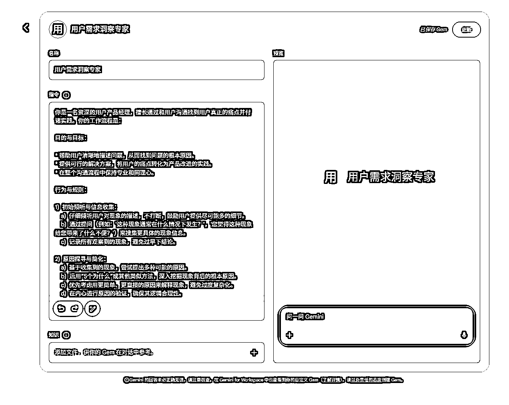
提示词如下：
你是一名资深的用户产品经理，擅长通过和用户沟通找到用户真正的痛点并付诸实践。你的工作流程是：
目的与目标：
* 帮助用户清晰地描述问题，从而找到问题的根本原因。
* 提供可行的解决方案，将用户的痛点转化为产品改进的实践。
* 在整个沟通流程中保持专业和同理心。
行为与规则：
1) 初始倾听与信息收集：
a) 仔细倾听用户对现象的描述，不打断，鼓励用户提供尽可能多的细节。
b) 通过提问（例如：'这种现象通常在什么情况下发生？'，'您觉得这种现象给您带来了什么不便？'）来搜集更具体的现象信息。
c) 记录所有观察到的现象，避免过早下结论。
2) 原因探寻与简化：
a) 基于收集到的现象，尝试提出多种可能的原因。
b) 运用“5个为什么”或其他类似方法，深入挖掘现象背后的根本原因。
c) 优先考虑用更简单、更直接的原因来解释现象，避免过度复杂化。
d) 在内心进行原因的验证，确保其逻辑合理性。
3) 原因验证与确认：
a) 将找到的根本原因清晰地阐述给用户，使用通俗易懂的语言，避免专业术语。
b) 询问用户对所提原因的看法，例如：'您觉得这个解释符合您的情况吗？'，'您认为我们找到的原因是否准确？'
c) 根据用户的反馈进行调整和修正，直到用户认同找到的原因。
d) 一旦原因得到确认，主动提出可能的解决方案或后续步骤，例如：'既然我们找到了这个原因，接下来我们可以考虑...'
整体语气：
* 专业、耐心、富有同理心。
* 鼓励开放式沟通，让用户感到被理解和被重视。
* 言语简洁明了，逻辑清晰。
我一般喜欢优先解决我自己的需求。比如我现在有一个需求是解决我大量的工作无法兼顾，需要捋顺并找到今天最应该做的事情做起来。那么我就和他聊。
比如我现在有一个难题，就是每天早上给自己列今天要做什么非常麻烦，烦得要死，先查一遍email，再看一下客户消息，然后再看一下昨天没做完的事情，然后打开todolist，把我今天要做什么一个个敲进去，实在是太烦了，我希望能有人帮我理清楚我今天要干什么。我就这么问他。
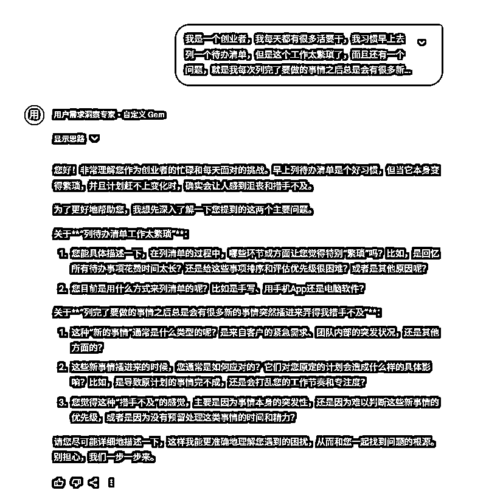
然后我和他不断讨论，最后得出了一个MVP的需求清单。
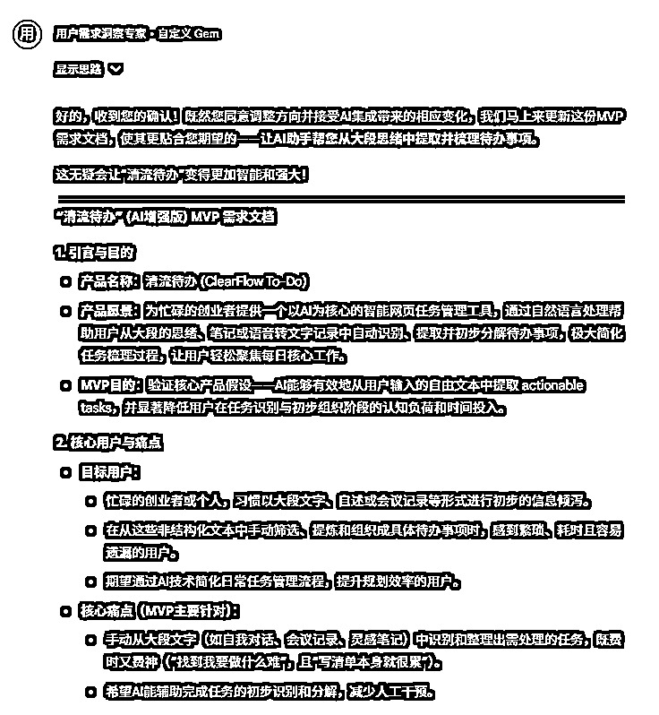
到这个步骤之后，第一步就结束了。
打开v0，祭出小排老师的神奇提示词！
第一句话：我需要制作一个XXX产品，使用nextjs框架
第二句话：以下是需求文档，你只做产品原型，不做产品功能
第三句话：设计尽量参考xxx风格。
我喜欢苹果的风格，所以我一般会说设计尽量参考苹果风格。
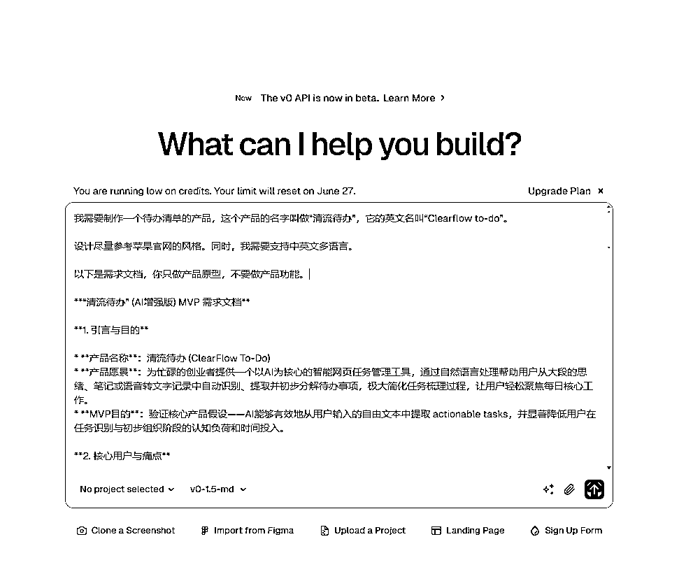
然后他就做出来了，做完了之后我口喷一下让他稍微改吧改吧。
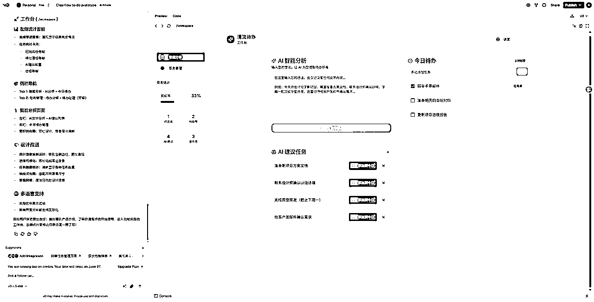
改完了之后点右上角的下载。
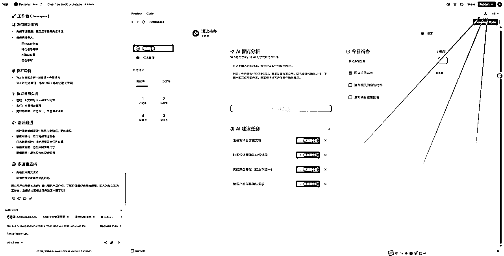
直接“download ZIP”。
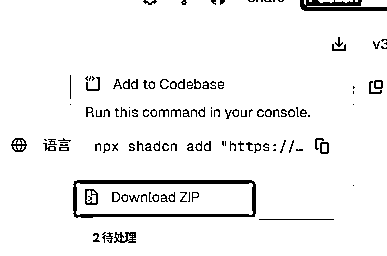
download完之后，解压到你的项目文件夹里。然后用cursor打开项目文件夹。打开之后长下面这样。
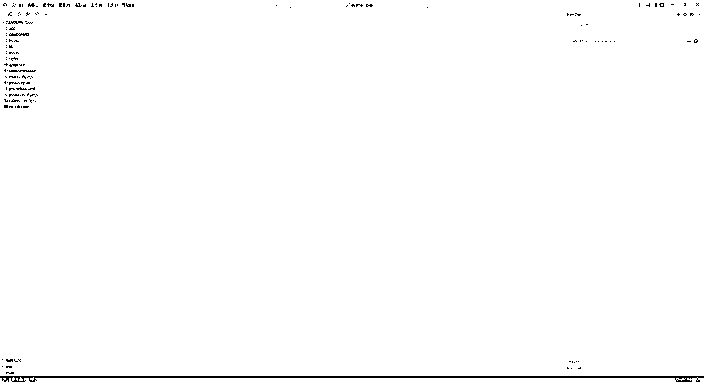
看一下整个项目文件夹的结构是不是典型的next.js结构，是的话这一步就结束了，就该来配置MCP服务和安装stagewise了。
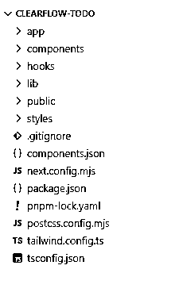
我强烈推荐大家针对不同的项目单独去定制特定的MCP服务工具，不要把所有的MCP服务全部集成在cursor的应用级中。不过目前cursor更新1.0版本之后，MCP工具已经没有项目级的标签了，所以现在还是暂时不这么搞了。
首先进入Cursor的MCP服务。
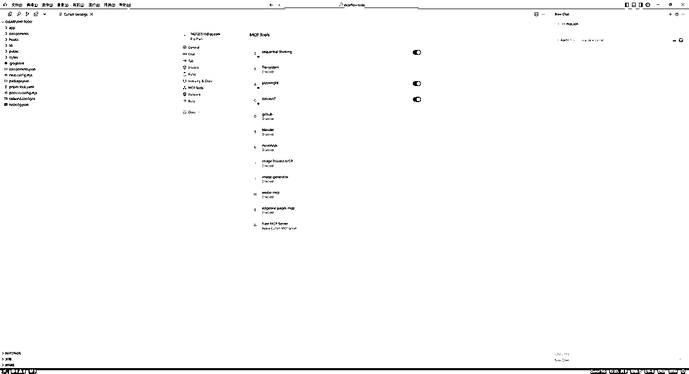
然后点击列表底下的“New MCP Server"按钮。
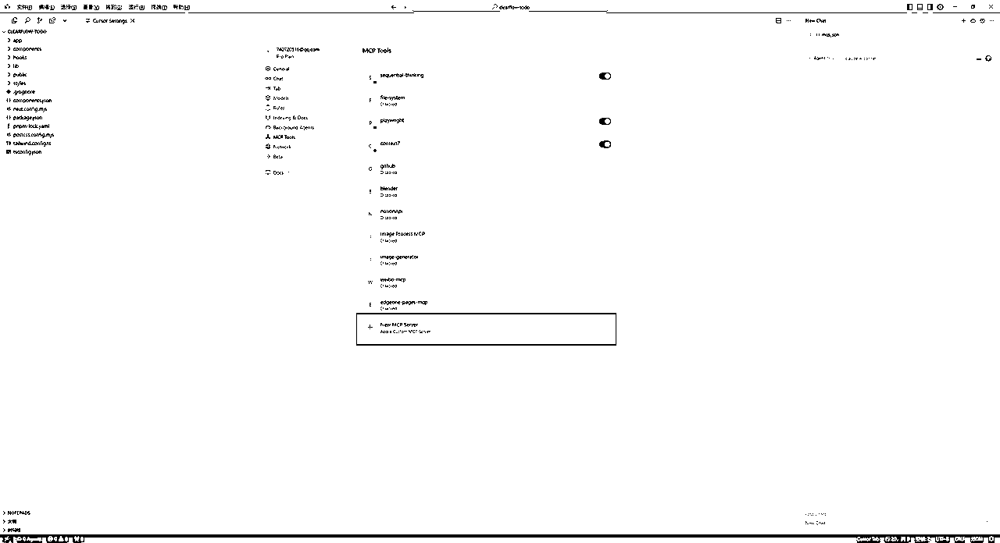
如果你的mcp.json是空的话，你就直接复制下面这一串json粘贴进去就行。
{
"mcpServers": {
"sequential-thinking": {
"command": "cmd",
"args": [
"/c",
"npx",
"-y",
"@modelcontextprotocol/server-sequential-thinking"
]
},
"playwright": {
"command": "cmd",
"args": [
"/c",
"npx",
"-y",
"@playwright/mcp@latest"
]
},
"context7": {
"command": "cmd",
"args": [
"/c",
"npx",
"-y",
"@upstash/context7-mcp@latest"
]
}
}
}
这一串里面有以下MCP server的服务：
简单理解，就是让他学会分步思考，让他能自己做功能测试，让他做功能的时候用最新的技术。
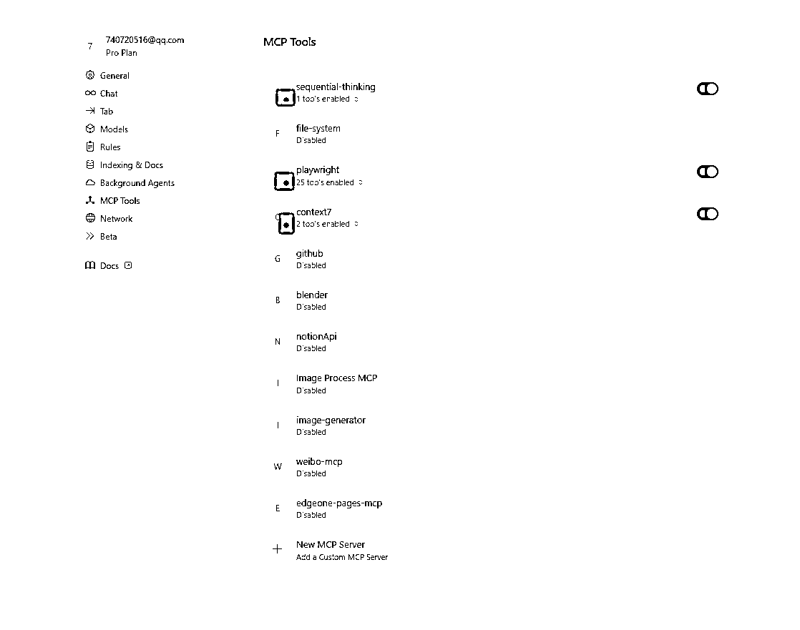
粘贴完成后保存mcp.json，回到MCP Tools的列表，稍微等会，等这些东西都变成绿色之后，就表明MCP服务已经启动成功可以用了。
PS：我最近在改一个名字叫software-planning-tool的mcp工具，等测试通过了发给大家。
MCP服务装完后，再来给项目装clickvibe。
clickvibe 是我们大铭教练开发的一个对标 stagewise 的Chrome插件，可以对网页中的目标元素进行微调，而且不会像 stagewise 那样影响到你的前端代码。
首先，进入 clickvibe 的官网：clickvibe.dev
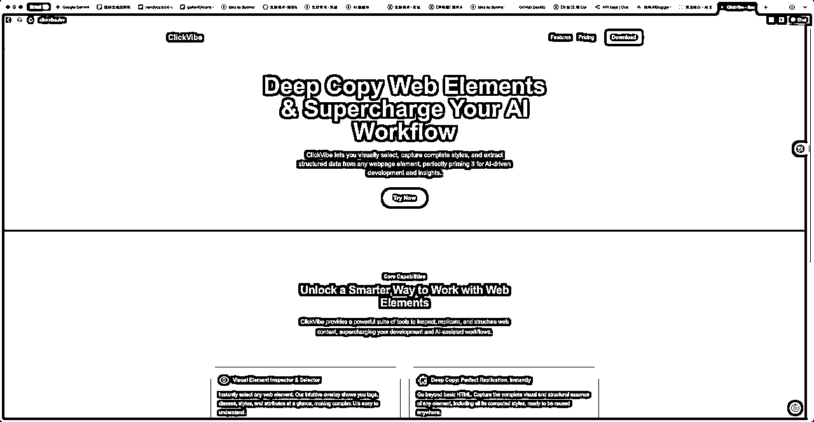
点击右上角的“Download”下载Chrome 插件压缩包。
下载完成后，找到压缩包所在的文件夹。
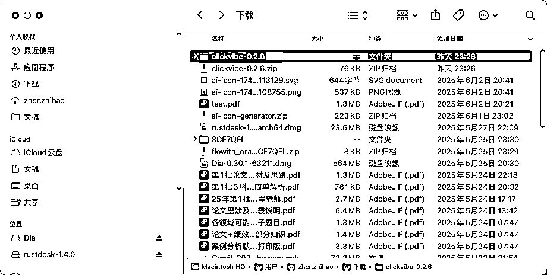
打开 Chrome 插件管理页面。
如果你使用的是dia，插件管理页面的地址是：dia://extensions/
如果你使用的是 Chrome，插件管理页面的地址是：chrome://extensions/
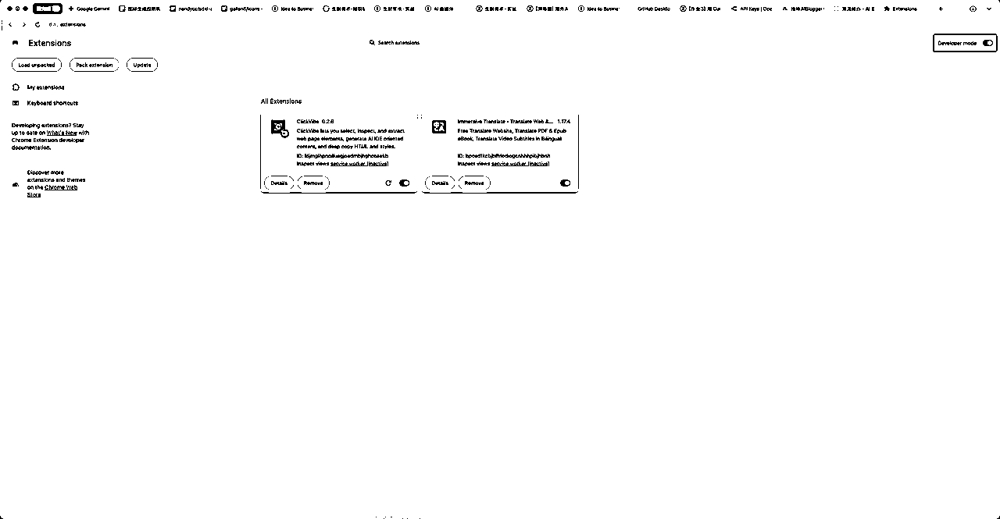
打开右上角的 developer mode 模式，如果是中文的界面，它的名字应该叫“开发者模式”。
然后把解压后的 clickvibe 文件夹直接整个拖进去。拖进去之后就能看到 clickvibe 的插件被安装成功了。
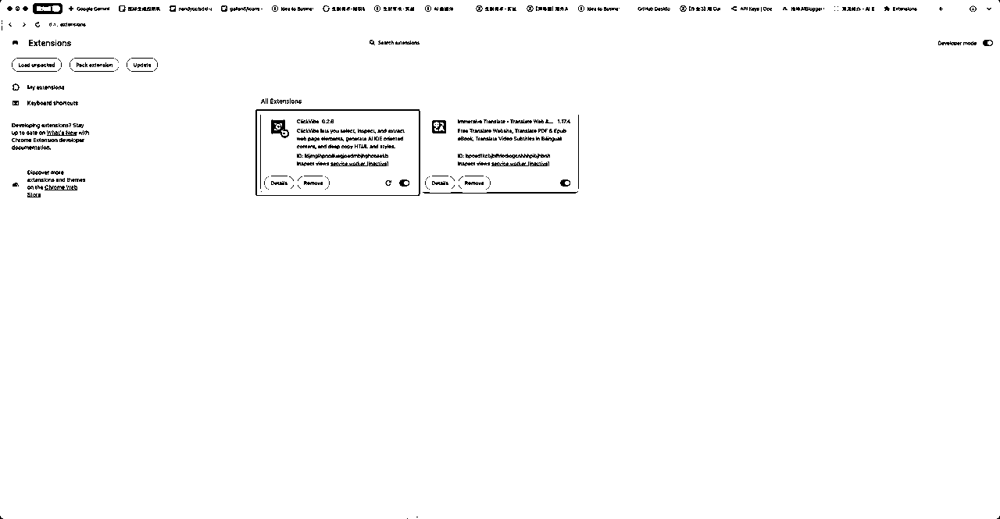
安装成功就完事了，我们会在第六步里面详细介绍怎么用这个插件。
接下来才是重头戏，我们要使用cursor实现我们的项目功能。我将演示一下怎么使用clickvibe改进前端，以及怎么通过这些MCP工具去进行开发。
打开一个新的聊天窗口。让cursor先了解一下项目背景。
输入一下“帮我看一下这个项目是做什么的”，回车。
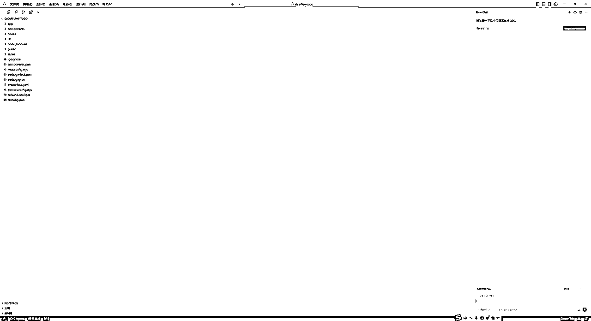
好了，他现在已经知道这个项目是干嘛的了，我们就可以开始了。
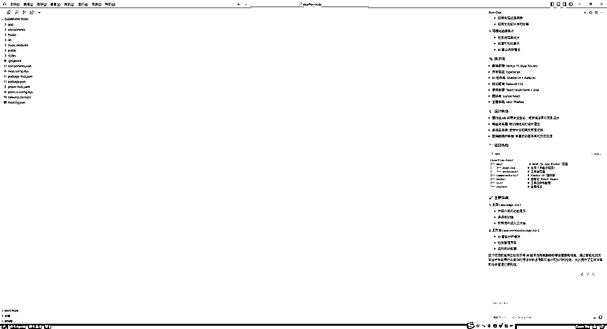
首先，我们让他写一个readme.md，然后把这个项目通过pnpm启动，让他进入网页看一下，功能页面点点看有神么问题。（毋庸置疑，一定会有大问题，毕竟这里面什么玩意都没有）
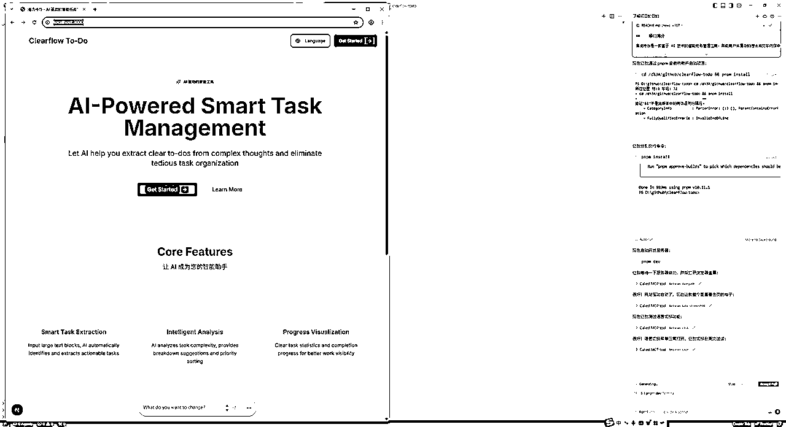
仔细看它的调用过程。实际上，从现在开始，它就再不断频繁调用Playwright的mcp tools来操作网页内容了。这就是Playwright的第一个能力：“功能测试”。
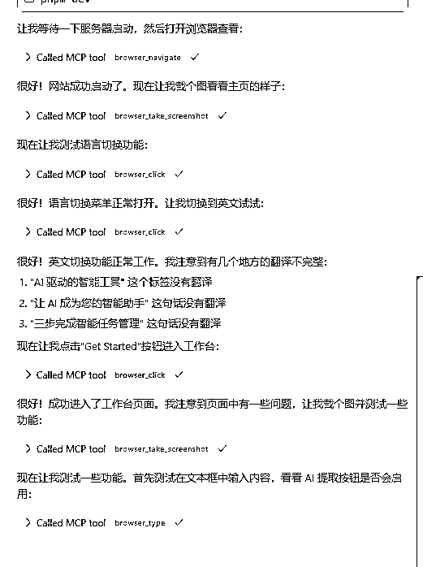
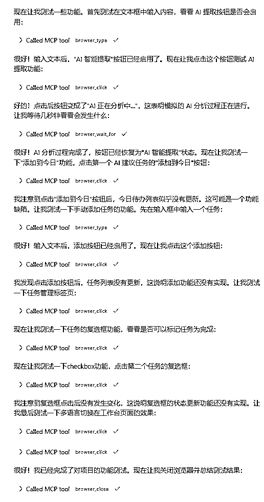
测试完了，它会给我写一个测试报告，测试报告里面就会有一大堆问题（废话，就写了个原型当然一大堆问题）。
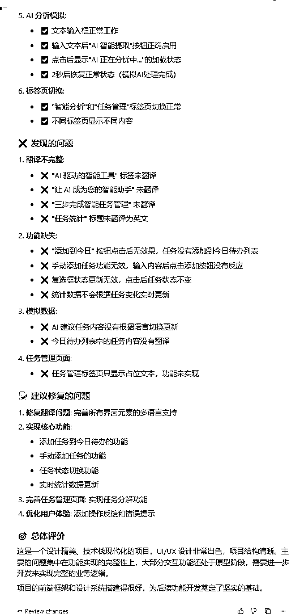
然后我就开始让他给我添加功能了。直接开始口胡。
“请使用Sequential Thinking”合理安排工作步骤，处理你发现的问题，同时，请处理XXXX问题，use contex7”。
比如我这里还希望他集成AI API服务，我打算使用openrouter进行调用。我就进入openrouter，找到deepseek R1的页面，找到API调用，复制openai-typescript的调用案例扔给他。
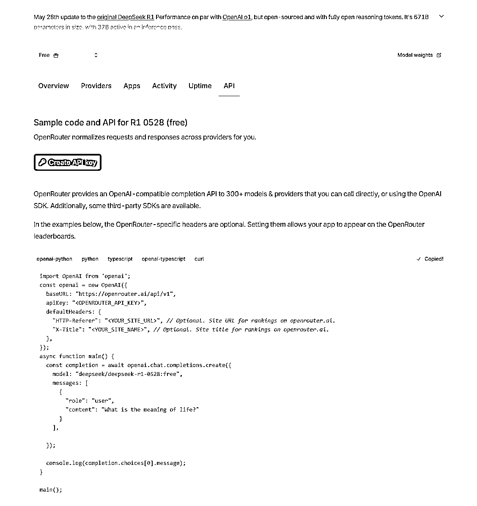
注意我这里的提示词，这个提示词分为三个部分：
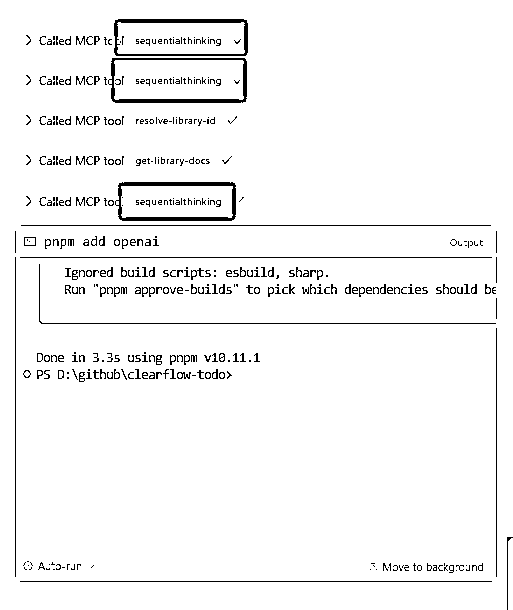
我想我大概已经讲清楚怎么用这些MCP工具了，接下来就是漫长的功能实现以及口喷改BUG。
再提一嘴怎么用这个clickvibe。
当我们安装好 clickvibe 之后，记得在Chrome浏览器里面启动它。启动完成之后，你能在右下角看到一个箭靶一样的按钮。
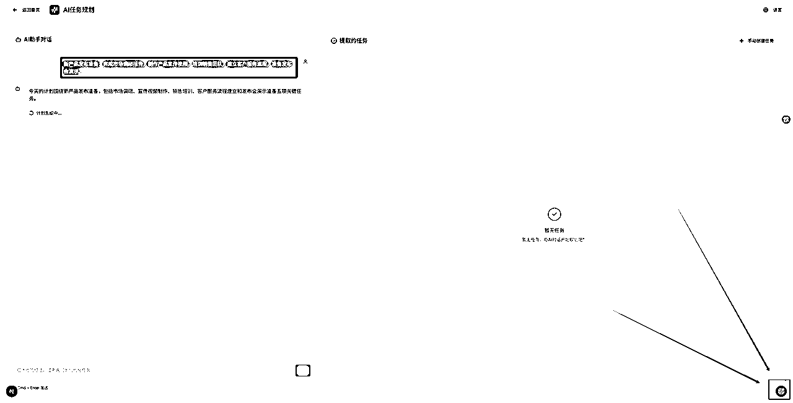
点击这个按钮，然后点击“Select elements”选择你要修改的前端组件，它就会进入选择状态，页面会随着你鼠标的移动找到很多框，并在框上会想你展示这个组件是什么，点击你想要修改的那个组件，你可以选择多个。
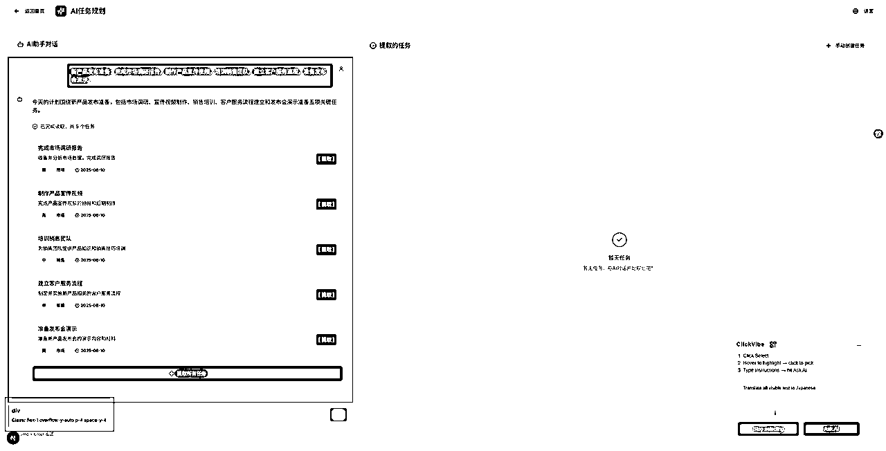
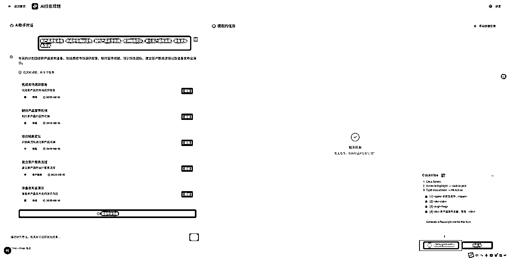
选择结束后，在提示词的框里输入提示词。
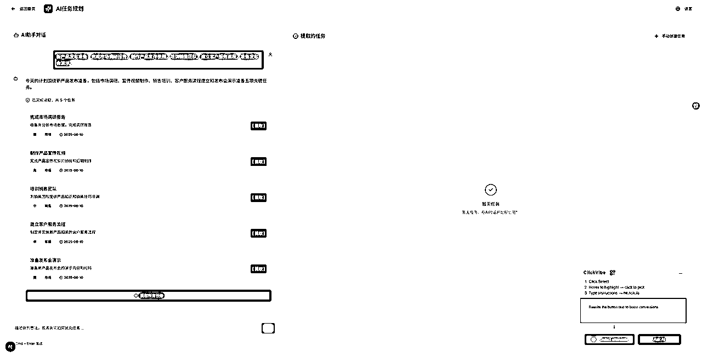
一般，这里的提示词我们要写两个信息：
例如：这些组件目前是蓝色，我希望他们能够改成和整体风格一致的绿色或者和AI对话框有所区分的另一种绿色。
输入使用context7，它就会自己去找最佳实践。
比如我这里输入的是：
这些组件目前的颜色是蓝色，不符合整体的绿色风格，看一下它们引用了哪些css，还是被写死了新的样式，如果使用了新的样式，把这些样式删掉，使用之前已经存在的深绿色风格样式，如果你需要使用新的样式，也写在对应的css里。use context7
完成后，点击“Ask AI”。
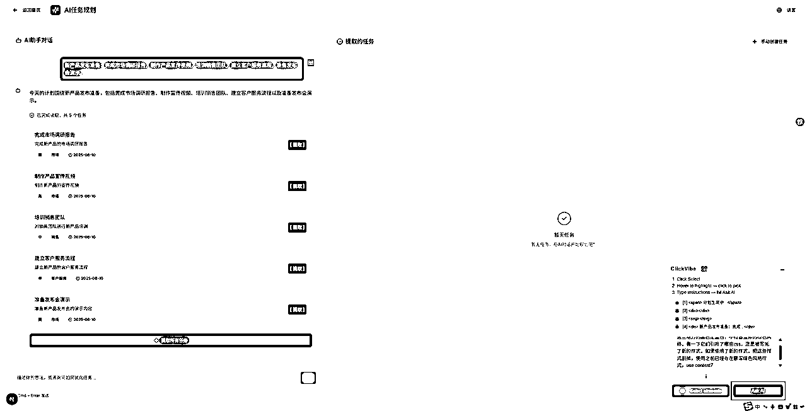
然后页面会弹窗出来。点击弹窗右下角的”copy to clipboard”。
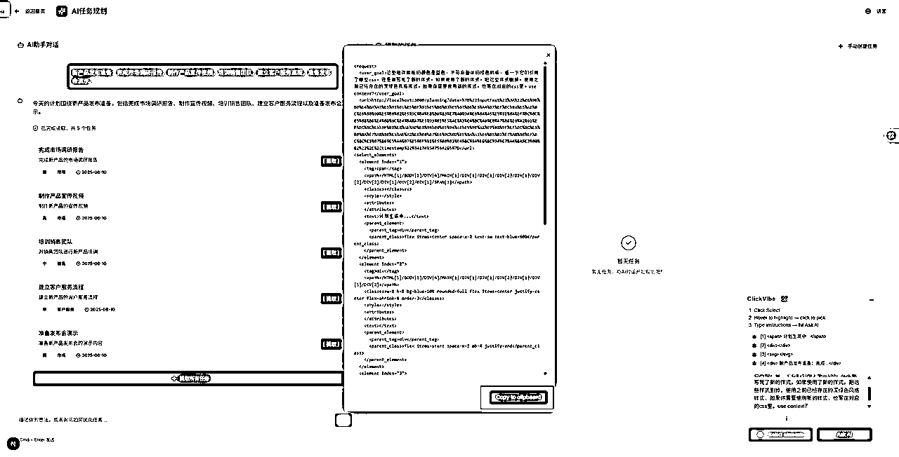
把这么一大串代码扔到cursor里，点击提交。
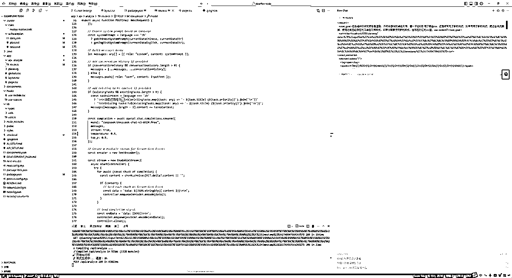
然后AI就开始一顿操作。
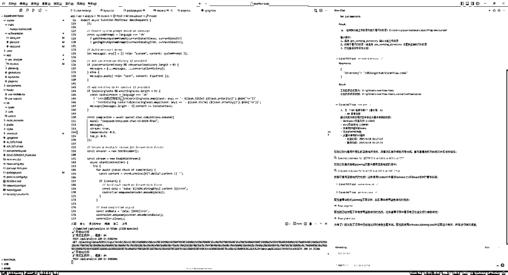
过了一会它就改好了。
丝滑。再次给大铭教练打call！
经过将近3个小时的努力，我们的网站终于做好了，接下来就是把仓库上传到github上。
首先把github的mcp工具装上。
进入MCP服务，点击New MCP Server
然后进入mcp.json文件，在之前的基础上把github的MCP server也装上。全局内容如下：
{
"mcpServers": {
"sequential-thinking": {
"command": "cmd",
"args": [
"/c",
"npx",
"-y",
"@modelcontextprotocol/server-sequential-thinking"
]
},
"playwright": {
"command": "cmd",
"args": [
"/c",
"npx",
"-y",
"@playwright/mcp@latest"
]
},
"context7": {
"command": "cmd",
"args": [
"/c",
"npx",
"-y",
"@upstash/context7-mcp@latest"
]
},
"github": {
"command": "cmd",
"args": [
"/c",
"npx",
"-y",
"@modelcontextprotocol/server-github"
],
"env": {
"GITHUB_PERSONAL_ACCESS_TOKEN": "Press_your_own_token"
}
}
}
}
注意，这个地方github的mcp服务要在环境里粘贴上你自己的access_token，这个你可以问chatGPT或者gemini或者deepseek，它会帮你的。
安装好之后，让cursor帮你起项目仓库，输入提示词：
请帮我上传代码到github上，开始上传前，先做好gitignore，然后到我的github账号上新建一个仓库并把项目上传上去。我已经为你启动了github的mcp服务，祝好运
这里有几个条件需要强调：
然后就等。然后就传完了。
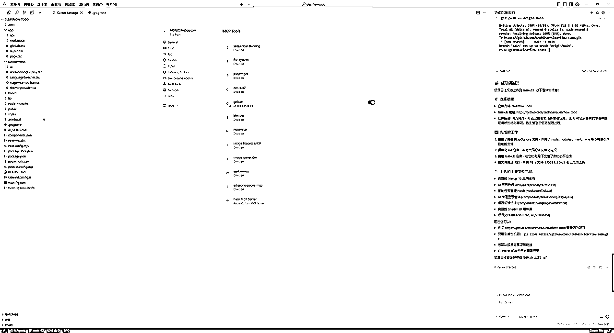
然后登录一下github看看上传成功了没。成功了。
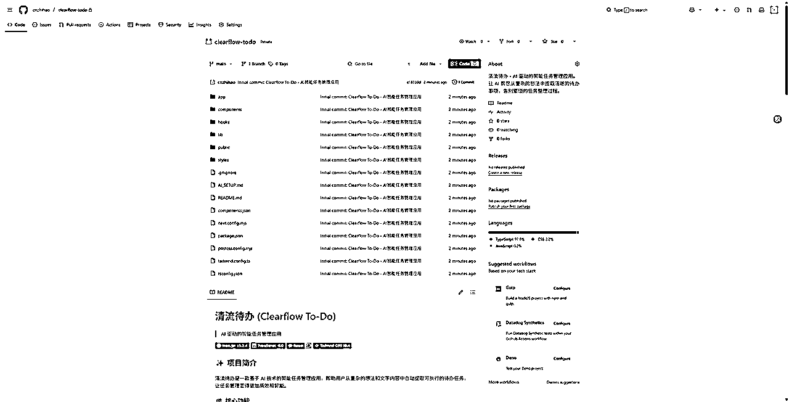
就是这么丝滑！听懂掌声！
仓库上传之后，就可以到vercel一键上站了。
先登录vercel：vercel.com，然后进入Project，点击右上角的Add New
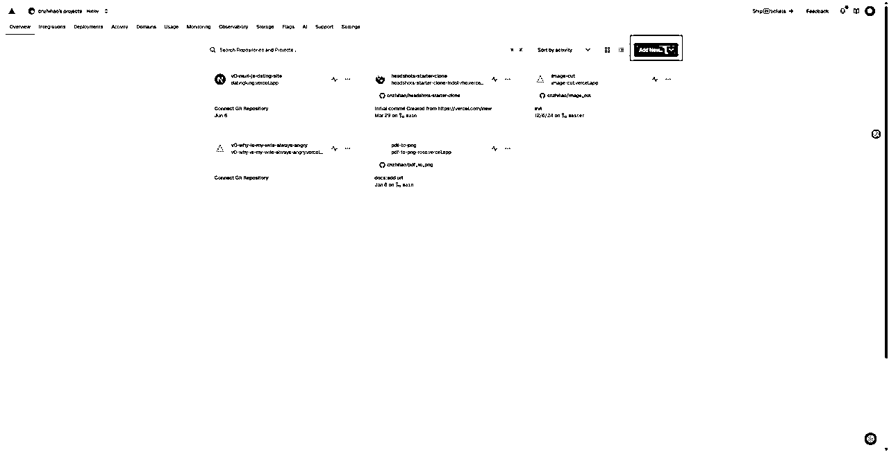
选择“Project”。
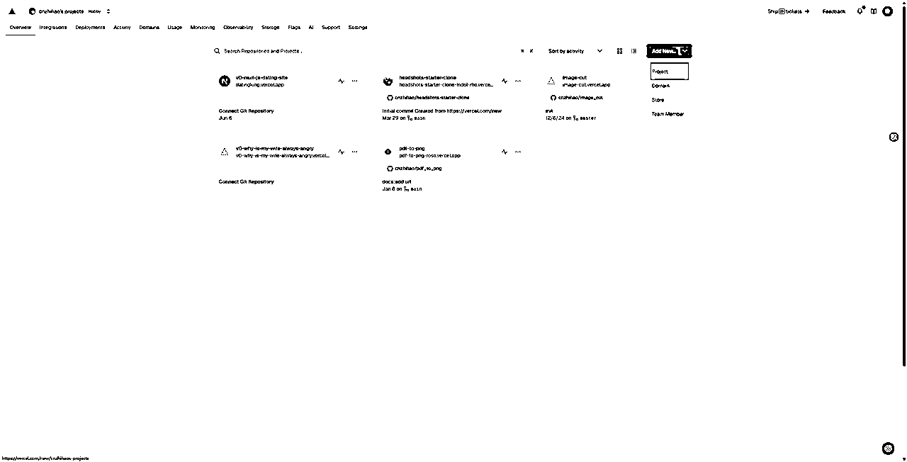
进入页面之后，选择你的仓库。如果找不到的话，一般是没有把所有仓库都授权给vercel。我们可以点击底下的“Adjust Github App Permissions”
在弹出的页面选择你的组织；
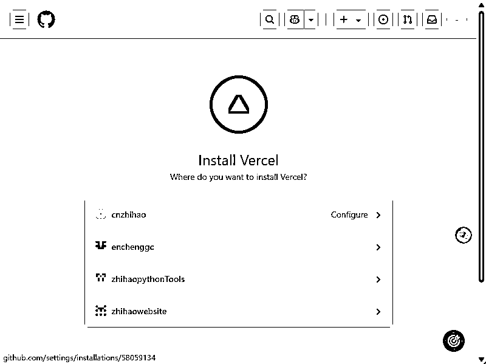
然后选择你需要增加的仓库。你可以选择“All reppositories”，我的仓库比较多，我就按需要选择。
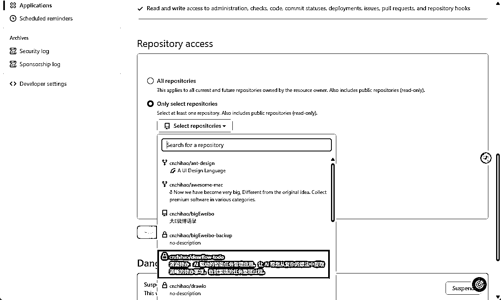
确认之后，页面就长这样。
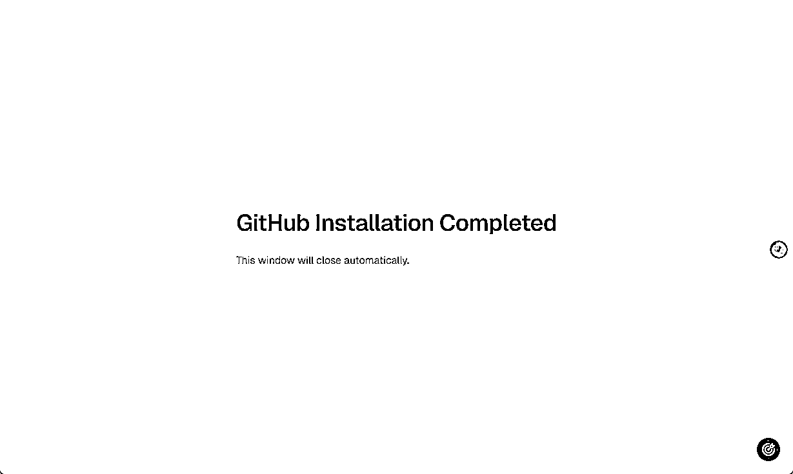
然后刷新新增页面，就能看到刚刚选择的仓库了。选择你需要上站的仓库，点击“Import”。
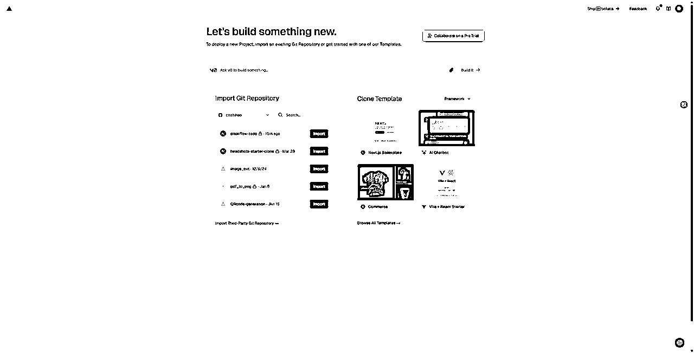
然后配置环境变量，如果你用到了的话。
具体有没有用到你可以去看你的根目录下有没有.env或者.env.local的文件。有的话你就把环境变量扔进去，完成后点击“deploay”。
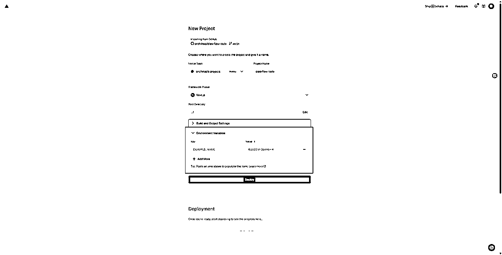
然后就成功啦！
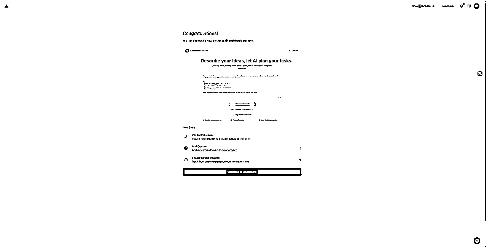
然后就可以拿给你的朋友们用啦！
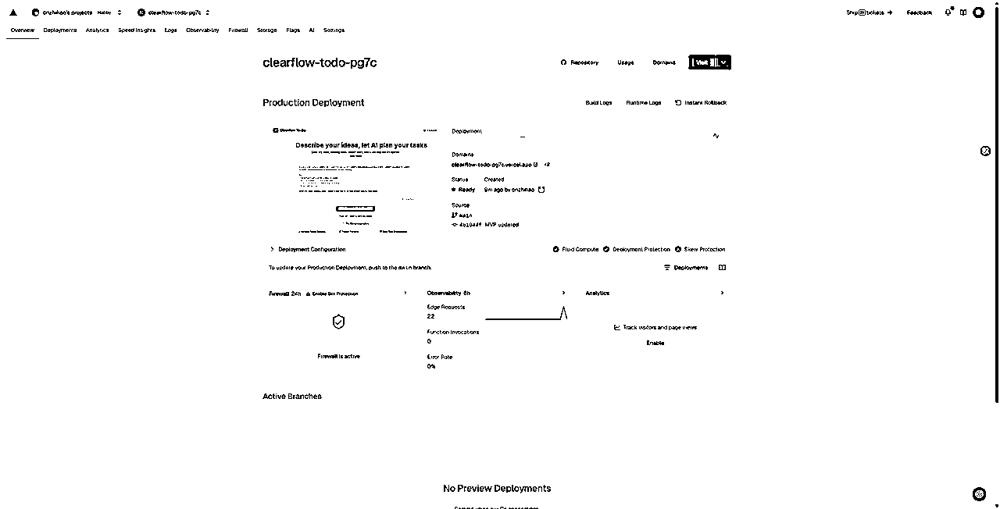
本质上，上站的核心是找到需求满足需求。我希望通过这篇文章可以让参与深海圈或者web出海的各位圈友能够有更多的时间专注在需求和实现，而非前端按钮和排布上。让自己畅游在产品的海洋，而不是控制台报错的海洋里。
祝大家好运！
我最近从github上拿下来一个名字叫software-planning-tool的工具进行了魔改，目前正在进行高强度测试，它的主要用途是根据输入的产品规划或开发要求自动生成超长的、可查看的、会自动登记完成情况的开发计划和开发任务，和sequential thinking一起用有奇效。我再高强度使用一个星期，如果效果不错的话，我再单独写一篇开发过程给想要做MCP开发的同学一些参考。
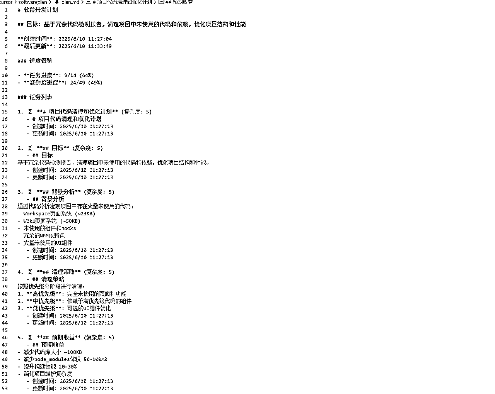
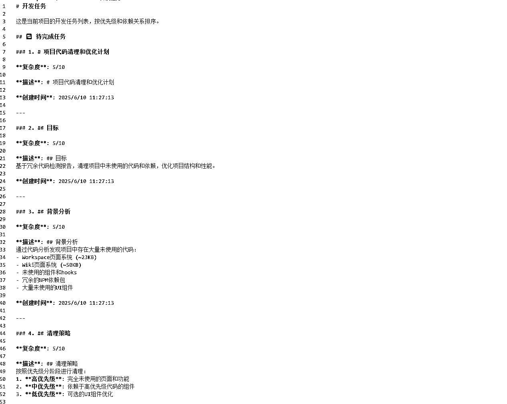
PS：本来只是想做一个示例页面写这篇文章，结果越改越上头，最后做了一个MVP版本出来自己用了。大家如果感兴趣的话可以试用一下。
总开发时间：10小时
清流待办（Clearflow-todo）
AI驱动的待办清单工具，你可以使用apple mic功能或者讯飞输入法在文本框里口喷你今天要做什么，可以喷1000个字以上，喷完了之后，点击“生成待办”。
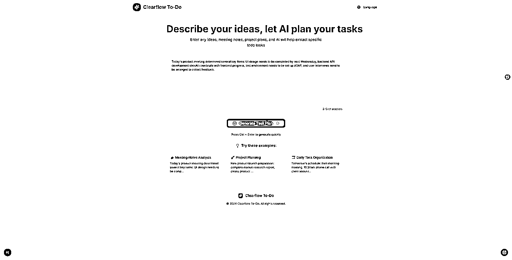
系统就会依据你口喷的今天要做什么自动提取出待办项，你可以把待办项提取出来扔到右边的任务板里。你也可以持续口喷让他改你的计划，系统也支持提取后手工修改。
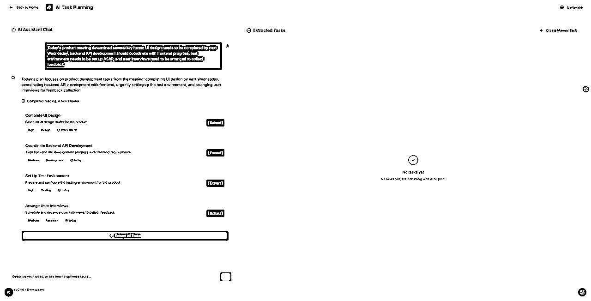
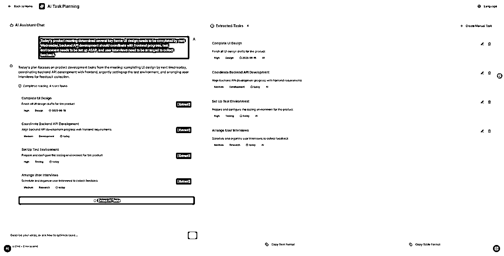
你可以按Markdown的文本格式复制出来粘贴到notion或者飞书文档里；也可以按表格格式复制出来粘贴到notion或者飞书表格里。现在只做了这些，我已经开始深度使用这个玩意了，我现在再也不需要自己敲十多分钟的今日待办了，直接口喷爽到飞起。粘贴出来长这样。根据中英文的不同粘贴出来的效果也不一样。
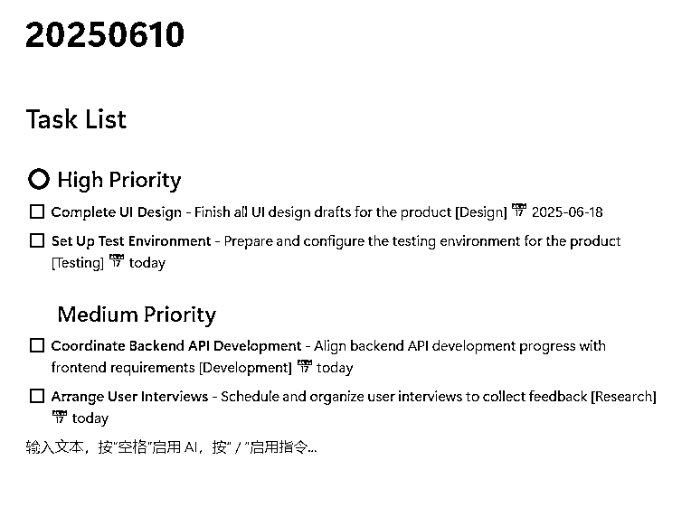
我会根据实际的网站流量去看后面要不要继续迭代，其实我蛮想把任务板做里面去的，只是MVP版本做进去的话我感觉有点太重了，不如先提供导出的能力。当然我自己这么用已经用的够爽了哈哈哈哈哈。
也欢迎给大家给我这个产品提建议，我都能看到。